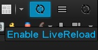
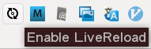

LiveReload - 網頁開發者必備的自動重新整理外掛

網頁開發者 (Web Developer) 一天會在瀏覽器 (browser) 裡重新整理 (refresh) 個千百次是常有的事，但這樣不只會造成開發上的中斷，也會加重雙手的負擔。
這裡凍仁將介紹 LiveReload 給大家，它是個可以在儲存檔案後自動重新整理 browser 的解決方案，LiveReload 雖然不能即時呈現，但可以讓開發環境變得友善點，是值得投資的好工具，若能搭配雙螢幕使用其效果更佳。
(註：本文的撰寫環境是以 Ubuntu 12.04 為主，若版本不同可能會有些許的不同。)
1. 建置 LiveReload server
1.1. 安裝 Ruby 1.9.1 (若已安裝 Ruby 1.8 請移除)。
[ jonny@precise ~ ]
$ sudo aptitude remove ruby1.8
[ jonny@precise ~ ]
$ sudo aptitude install build-essential ruby1.9.1 ruby 1.9.1-dev
1.2. 安裝 LiveReload 相關套件。
[ jonny@precise ~ ]
$ sudo gem install bundle guard guard-livereload
1.3. 切換至專案目錄。
[ jonny@precise ~ ]
$ cd project
1.4. 初始化並產生設定檔。
[ jonny@precise project ]
$ guard init livereload
12:33:40 - INFO - Guard here! It looks like your project has a Gemfile, yet you are running
> [#] `guard` outside of Bundler. If this is your intent, feel free to ignore this
> [#] message. Otherwise, consider using `bundle exec guard` to ensure your
> [#] dependencies are loaded correctly.
> [#] (You can run `guard` with --no-bundler-warning to get rid of this message.)
12:33:40 - INFO - Writing new Guardfile to /home/jonny/project/Guardfile
12:33:40 - INFO - livereload guard added to Guardfile, feel free to edit it
1.5. 設定預追蹤的檔案 (此範例為追蹤 css/.css, js/.js 和所有副檔名為 css, js, html 之檔案)。
[ jonny@precise project ]
$ vi Guardfile
# More info at https://github.com/guard/guard#readme
guard 'livereload' do
watch(%r{\.(css|js|html)})
watch(%r{css/.+\.(css)})
watch(%r{js/.+\.(js)})
end
1.6. 啟動 LiveReload 並監控該檔案列表。
[ jonny@precise project ]
$ bundle exec guard
12:54:30 - INFO - Guard is using NotifySend to send notifications.
12:54:30 - INFO - Guard is using Tmux to send notifications.
12:54:30 - INFO - Guard is using TerminalTitle to send notifications.
12:54:30 - INFO - LiveReload is waiting for a browser to connect.
12:54:30 - INFO - Guard is now watching at '/home/jonny/project'
[1] guard(main)>
2. 於瀏覽器安裝 LiveReload add-ons
2.1. 下載並安裝 LiveReload add-ons，Firefox 的部份需使用 LiveReload 官方網頁的 add-ons 才可正常使用，Mozilla 上的可能無法正常運作)。
[ jonny@precise ~ ]
$ firefox https://feedback.livereload.com/knowledgebase/articles/86242-how-do-i-install-and-use-the-browser-extensions-
Safari extension 2.0.9
Chrome extension on the Chrome Web Store
Firefox extension 2.0.8
2.2. 於 Browser 按下 LiveReload 的圖示。
 
Firefox Chrome 2.3. 回到執行 LiveReload server 的終端機 (Terminal)，成功運作時會出現 Browser connected 的訊息。
[1] guard(main)> 12:55:29 - INFO - Browser connected.
12:55:29 - INFO - Browser connected.
最後要感謝創造出這等好物的前輩們，真的是造福人群啊！
資料來源：
- Using LiveReload on Linux \ Srikanth AD
- guard-livereload | GitHub
- LiveReload 網頁程式設計師必備工具 | AppleBOY
- 鳥毅的Blog: 在Linux使用Guard-LiveReload